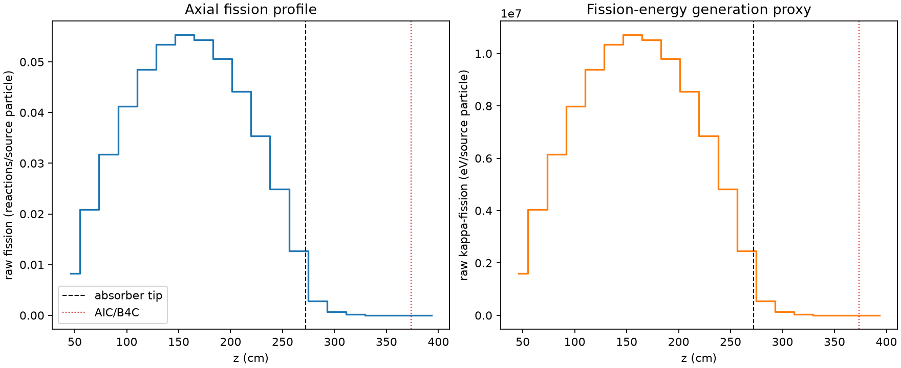
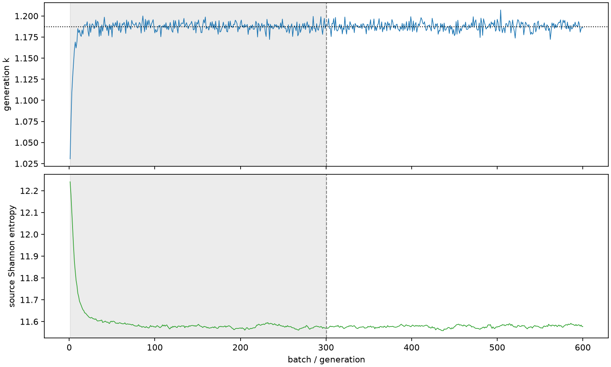

| field | value |
|---|---|
| experiment | V2-STAGE_256_OGRENCI_04-0011 |
| k | 1.18735356472369 |
| MC standard error | 0.0001900169513724573 |
| seconds | 954.4388476770037 |
| acceptance | not_assessed |
| convergence | review_required |
Completed is output integrity only; physical and statistical review required. Zero tallies do not prove zero production or zero uncertainty.
| diagnostic | value |
|---|---|
| geometric fuel voxels | 5280 |
| zero fission tally voxels | 69 |
| low signal fuel voxels | 1051 |
| low signal fission share | 9.182358540654144e-05 |
| low signal kappa share | 9.187002753797929e-05 |
| important fission share | 0.950036784275795 |
| previous filter included | 4229 |
| duration estimate s | 1562.5173488400023 |
| actual minus estimate s | -608.0785011629987 |
| fission relative MC error | statistics |
|---|---|
| all_geometric_fuel | {"voxels": 5280, "positive_mean_voxels": 5211, "zero_mean_voxels": 69, "undefined_relative_error_voxels": 69, "median": 0.011264913694092516, "p95": 0.7833370991010453, "maximum": 1.0000000000000002} |
| low_signal | {"voxels": 1051, "positive_mean_voxels": 982, "zero_mean_voxels": 69, "undefined_relative_error_voxels": 69, "median": 0.5205194838816994, "p95": 1.0, "maximum": 1.0000000000000002} |
| important_95pct | {"voxels": 2912, "positive_mean_voxels": 2912, "zero_mean_voxels": 0, "undefined_relative_error_voxels": 0, "median": 0.008272968214137668, "p95": 0.011950073393187932, "maximum": 0.015770258945724647} |
| outside_previous_filter | {"voxels": 1051, "positive_mean_voxels": 982, "zero_mean_voxels": 69, "undefined_relative_error_voxels": 69, "median": 0.5205194838816994, "p95": 1.0, "maximum": 1.0000000000000002} |
| kappa_fission relative MC error | statistics |
|---|---|
| all_geometric_fuel | {"voxels": 5280, "positive_mean_voxels": 5211, "zero_mean_voxels": 69, "undefined_relative_error_voxels": 69, "median": 0.011253126349403668, "p95": 0.7823182478201105, "maximum": 1.0000000000000002} |
| low_signal | {"voxels": 1051, "positive_mean_voxels": 982, "zero_mean_voxels": 69, "undefined_relative_error_voxels": 69, "median": 0.5199454830065122, "p95": 1.0, "maximum": 1.0000000000000002} |
| important_95pct | {"voxels": 2912, "positive_mean_voxels": 2912, "zero_mean_voxels": 0, "undefined_relative_error_voxels": 0, "median": 0.008264406590053779, "p95": 0.01193779744236026, "maximum": 0.015752933582185543} |
| outside_previous_filter | {"voxels": 1051, "positive_mean_voxels": 982, "zero_mean_voxels": 69, "undefined_relative_error_voxels": 69, "median": 0.5199454830065122, "p95": 1.0, "maximum": 1.0000000000000002} |
| axial bin | fission share | kappa-fission share |
|---|---|---|
| 1 | 0.017088466364623082 | 0.017089143269981438 |
| 2 | 0.042934394254489146 | 0.04293421071811929 |
| 3 | 0.06538958265911766 | 0.06538938689201504 |
| 4 | 0.0850793899306301 | 0.0850789052626241 |
| 5 | 0.10001960712196314 | 0.10001905026997168 |
| 6 | 0.11011309333794904 | 0.11011266770417037 |
| 7 | 0.11405389304393573 | 0.11405344038309506 |
| 8 | 0.11197651224150014 | 0.11197607484390958 |
| 9 | 0.10429297283008554 | 0.1042925223208397 |
| 10 | 0.0910860124030652 | 0.09108575483307052 |
| 11 | 0.07297300176112166 | 0.07297276113115207 |
| 12 | 0.051281688515716344 | 0.05128161496381872 |
| 13 | 0.02621455115591731 | 0.02621520604118015 |
| 14 | 0.005717962234084802 | 0.005719794348064555 |
| 15 | 0.0013635349594890128 | 0.0013639635245464303 |
| 16 | 0.0003221243163056748 | 0.0003222434070708751 |
| 17 | 7.157188015231317e-05 | 7.160641035326935e-05 |
| 18 | 1.694623480169194e-05 | 1.6957546845351008e-05 |
| 19 | 3.6907057055356377e-06 | 3.6914727308711007e-06 |
| 20 | 1.0040493467839094e-06 | 1.0046564408144474e-06 |
Histories include the inactive-to-active transition at batch 300. kappa-fission approximates fission energy production, not total heat deposition.

